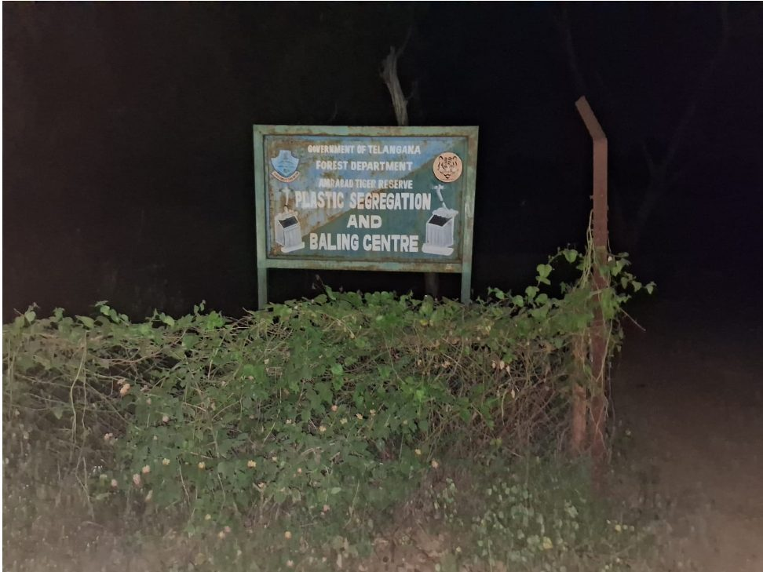
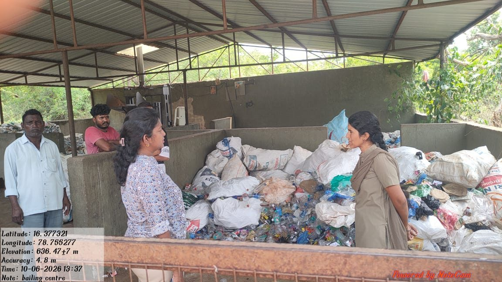
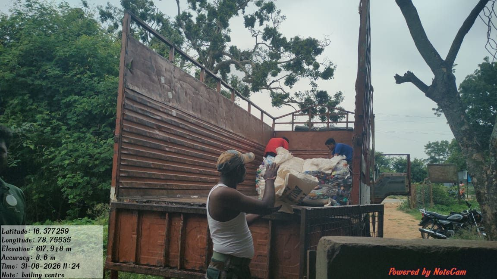

From 7 tigers to 42
Amrabad Tiger Reserve grew its tiger count from 7 in 2017-18 to 42 in the 2025-26 count, while running community programmes with the Chenchu tribe.
Tigers: from single digits to 42
ATR grew from 7 tigers in 2017-18 to 42 in 2025-26, a six-fold rise in eight years, and adult females rose from 4 to 18.
The 2025-26 count has 18 females, 14 males, two sub-adults and eight cubs from three litters. Females now outnumber males, the clearest sign of a population that can sustain itself.
Tiger density roughly doubled from 0.19 to 0.40 per 100 sq km between 2017-18 and 2021-22, and cubs were recorded in six of the eight surveys.
Part of the rise reflects better monitoring under the NTCA Phase IV method:
| Measure | 2017-18 | 2025-26 |
|---|---|---|
| Camera-trap locations | 338 | 1,066 |
| Trap-nights | 7,218 | 31,980 |
| Area sampled | about 880 sq km | about 2,930 sq km |
| Survey period | 4 months | 7 months |
Tigers in Amrabad rose from 7 to 42
View as table
Source: ATR note "Increase in tigers from single digit to 42", Phase IV monitoring; 2018-19 and 2022-23 counts from Forest Department figures reported in the press.
Conservation measures behind the recovery
Breeding tigresses
Tigress F6 "Farha" has had four litters and her daughter F18 two; together they have added 18 tigers, nearly half the reserve. F7 "Tara" has raised two cubs to adulthood, and seven cubs counted in 2023-24 were confirmed as adults in 2024-25.
Water all year
40 solar-powered bore wells replaced tanker supply, backed by check dams, percolation tanks and saucer pits. There is now about one water source for every 2 sq km.
Food for prey
A 35-hectare prey augmentation centre in Maddimadugu range breeds chital, sambar and nilgai for release. Officials are also seeking 15 to 20 Indian gaur.
Grasslands
About 5,000 hectares were cleared of invasive weeds by 2026, up from 3,663 hectares in an earlier four-year period.
Protection
29 anti-poaching base camps, over 170 Chenchu trackers, a speed-boat patrol on the Krishna, and night advisories on NH 765. About 96 families in four core hamlets have agreed to relocate.
Prey density
Phase IV monitoring in 2024 found 11.76 prey animals per sq km across six species, or about 25,800 animals in the reserve.
The survey ran from December 2023 to May 2024 with more than 170 field staff. Teams walked fixed transect lines at dawn, and distance sampling corrected for animals missed further from the line.
Sambar, the tiger's preferred large prey, has the most precise estimate of all species. The four-horned antelope is the rarest: a shy Schedule I species found only in India and Nepal, which needs special attention. The prey augmentation centre and grassland work aim to grow this base further.
| Species | Estimated animals in ATR |
|---|---|
| Spotted deer (chital) | 7,020 to 14,085 |
| Wild pig | 3,554 to 8,030 |
| Sambar | 3,247 to 5,309 |
| Nilgai | 1,733 to 2,347 |
| Common langur | 1,140 to 4,080 |
| Four-horned antelope | 285 to 768 |
Spotted deer make up about 41% of the prey base
View as table
Source: ATR note "Prey Density in Amrabad Tiger Reserve: Phase IV Monitoring 2024" (line transects, distance sampling).
Rag pickers initiative (Swachh Sevaks)
The Plastic Baling Centre at Mannanur has baled about 75 tonnes of plastic since it opened in June 2021. Seven Swachh Sevaks (rag pickers) collect the waste and three staff run the baling.
The centre sits in Compartment 61, Mannanur (North) beat, Mannanur range. The Swachh Sevaks pick up plastic and litter along the Hyderabad-Srisailam highway and around eco-tourism spots. The staff segregate it into multi-layer plastic (MLP) wrappers and PET bottles, press it into 40 kg bales, and send it to authorised recyclers.
The yearly volume more than doubled, from 8.0 tonnes in 2021 to 18.4 tonnes in 2025. Most of that rise is wrappers: MLP grew almost five times, from 1.8 to 8.8 tonnes. In all, 51.6 tonnes have been sent for recycling, including 17.6 tonnes in 2025 alone. Check posts on the highway now also screen vehicles for plastic.
About 75 tonnes of plastic baled at Mannanur since 2021
View as table



Source: ATR Mannanur Range, MEE programme data: Plastic Baling Centre register, 2021 to 2026.
Community livelihood: jute bag making
Jute bag stitching, started in 2022 with Apollo Hospitals, now produces 20,000 to 30,000 bags a year and earns each woman about ₹15,000 a month.
About 50 women were trained under ATR, and another 60 under the neighbouring Nagarjunasagar Srisailam Tiger Reserve. Jute is bought from Kolkata, and the finished bags go to hospitals and to ATR itself, replacing plastic carry bags.
The women are also given lunch, snacks and tea at the centre. The work gives Chenchu and other local women a steady income close to home, and every bag sold takes plastic out of the reserve. The workshop is also a stop on the Mannanur eco-tourism circuit.
| Measure | Figure |
|---|---|
| Women trained | 50 (ATR) and 60 (NSTR) |
| Stitching machines | 12 (6 for the women's group, 6 for the Forest Department group) |
| Bags stitched a year (2025-26) | 20,000 to 30,000 |
| Rate paid per bag | About ₹15 |
| Bags per woman per day | 30 to 40 |
| Earnings per woman | ₹450 to ₹600 a day, about ₹15,000 a month |
Apollo health initiative
Apollo Foundation's clinics and camps have recorded over 1 lakh patient services in and around ATR since 2022, mostly for remote Chenchu and forest-fringe communities.
The work began with a 50-bed COVID-19 isolation facility in 2021, which isolated 116 patients. It now runs satellite clinics, mobile medical camps and an ambulance, with free tests: complete blood picture, lipid profile, ECG and biochemistry.
Consultations rose from under 1,000 in 2022 to around 20,000 a year since 2023. Forest Department frontline staff are treated free.
The Forest Department supports the ambulance with maintenance, a driver and housing for clinic staff. This partnership brings regular medical care to hamlets that are hours from the nearest hospital.
Over one lakh consultations and camp services since 2022
View as table
The CSR programme rests on three pillars
Health and hygiene
- Satellite clinic and outreach camps
- Geriatric nutrition centres
- Dry nutrition kits for TB patients
- Food support for eligible families
Community engagement
- Community sports
- Water plants and awareness drives
Livelihood
- Vegetable seed kits for kitchen gardens
- Jute bag training and work
- Candle making
Source: ATR Mannanur Range, MEE programme data: Apollo Foundation CSR records, 2022 to 2026.
Photo gallery
About Amrabad Tiger Reserve
ATR covers 2,611 sq km in the Nallamala hills of Telangana, with a core of 2,166 sq km. It is one of the largest tiger reserves in India and is contiguous with Nagarjunasagar Srisailam Tiger Reserve across the Krishna river.
The reserve is home to the Chenchus, a Particularly Vulnerable Tribal Group. Every community programme on this site is built around them.
| Total area | 2,611 sq km |
| Core area | 2,166 sq km |
| Landscape | Nallamala hills, Telangana |
| Contiguous with | Nagarjunasagar Srisailam TR |
| Community | Chenchu (PVTG) |